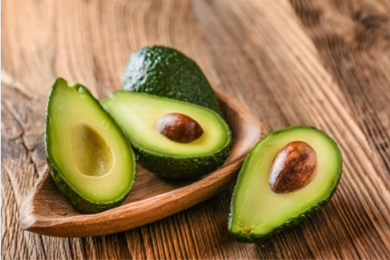
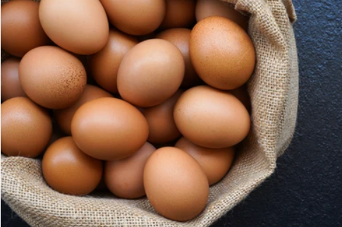
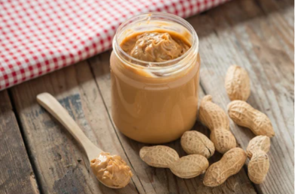
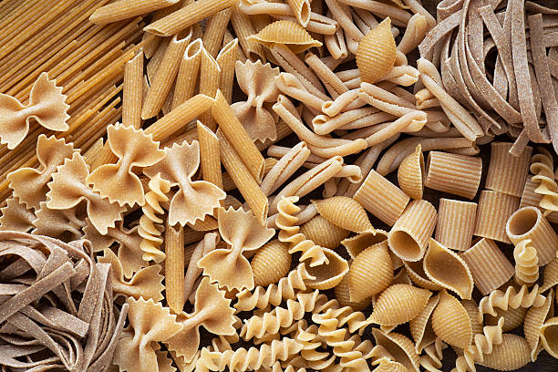
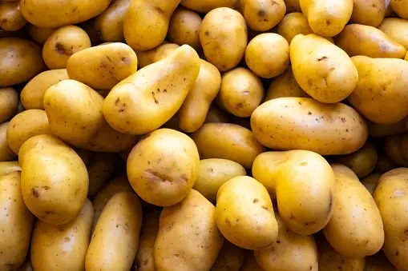

|  |
Avocado is beneficial for underweight individuals as it's high in healthy fats and calories, aiding weight gain. Packed with essential nutrients, easy to include in meals, and supportive of digestive health, it can help in gaining healthy weight. However, it's best used as part of a balanced diet and should be combined with other nutrient-rich foods for effective weight gain. Consulting a healthcare professional or dietitian for personalized advice is recommended. |
 |
Eggs are crucial for underweight individuals due to their high-quality protein, healthy fats, and essential nutrients, aiding in healthy weight gain. Rich in vitamins, minerals, and amino acids, eggs support muscle growth and provide a sustainable source of energy for those looking to gain weight. Including eggs in a balanced diet can help underweight individuals meet their nutritional needs while promoting overall health and weight gain. |
| AVOCADO | EGGS | ||
|  | Nut butter is vital for underweight individuals as it's a dense source of healthy fats, proteins, and calories, supporting healthy weight gain. Packed with nutrients like omega-3 fatty acids and vitamins, nut butter offers energy, aids muscle growth, and facilitates nutrient absorption, making it beneficial in achieving weight goals. Incorporating nut butter into meals helps increase calorie intake and promotes a balanced diet for those aiming to gain weight. |
Dark chocolate is valuable for underweight individuals as it provides concentrated calories, healthy fats, and antioxidants, aiding in weight gain. Rich in iron, magnesium, and fiber, dark chocolate supports overall health, boosts energy, and encourages a healthy appetite, making it beneficial for those striving to gain weight. Moderation is key; incorporating dark chocolate into a balanced diet can enhance calorie intake and offer nutritional benefits for individuals aiming to increase weight. | |
| NUT BUTTER | DARK CHOCOLATE | ||
 |
Milk is crucial for underweight individuals as it's a rich source of protein, calcium, and essential vitamins, promoting healthy weight gain and muscle development. Its high-quality protein aids in building and repairing tissues, while calcium supports bone health, making milk beneficial for overall strength. Consuming milk regularly helps increase calorie intake and provides essential nutrients, contributing to a balanced diet for those aiming to gain weight. |
 |
Chicken is vital for underweight individuals due to its high protein content, essential for muscle development and weight gain. Packed with nutrients like B vitamins and selenium, chicken supports metabolism and immune function, aiding in overall health for those striving to gain weight. Incorporating chicken into meals provides a lean protein source, essential for tissue repair and boosting calorie intake, making it beneficial in achieving healthy weight goals. |
| MILK | CHICKEN | ||
|  | Wheat pasta is important for underweight individuals as it offers complex carbohydrates, aiding in sustainable energy and weight gain. Rich in fiber, vitamins, and minerals, wheat pasta supports digestive health and provides essential nutrients necessary for overall well-being. Incorporating wheat pasta into meals can boost calorie intake and serve as a nutritious foundation for a balanced diet, beneficial for those aiming to gain weight. |
 |
Potatoes are valuable for underweight individuals due to their high carbohydrate content, aiding in healthy weight gain and energy production. Rich in vitamins, minerals, and fiber, potatoes support overall health and digestion, contributing to a well-rounded diet for weight gain goals. Including potatoes in meals provides a source of complex carbohydrates and nutrients, helping to increase calorie intake effectively. |
| WHEAT PASTA | POTATO | ||